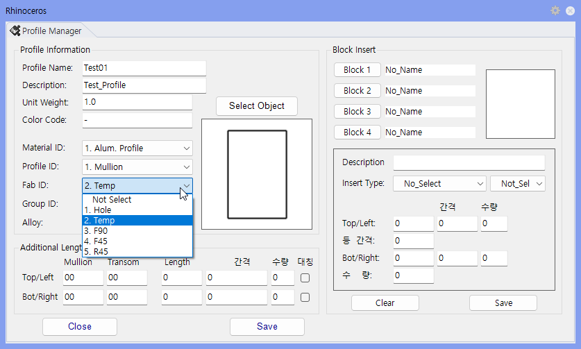

MakeTemp
선택한 Surface를 Fab_ID = 2 으로 교체하는 명령어 입니다.
모델링 중 임시로 만든 단면이나 실제 가공 대상이 아닌 Surface를 Fab_ID = 2(Temp)로 표시해, 절단 리스트·자재 리스트·도면 집계에서 제외할 때 사용합니다. 대상 Surface의 P_name은 Temp로 바뀌며, Section Data가 없는 Surface에는 No data 표시가 나타납니다.

| 항목 | 설명 |
|---|---|
| 변경 데이터 | 선택한 Surface Data가 임시 데이터 기준으로 교체됩니다. |
| 출력 메시지 | 교체된 Surface Data 개수가 Rhino 명령창에 표시됩니다. |
| 명령어 | 설명 |
|---|---|
| Pname | Section Profile 이름과 속성 입력 |
| SSP | 작성된 Section Profile 그룹 선택 |
| SSC | Section 선택 상태 초기화 |